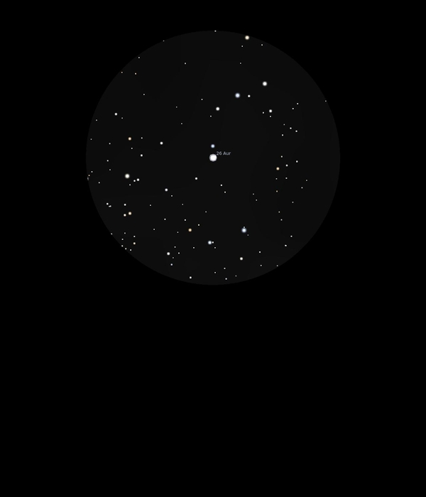

26 Auriga
Double Star in Auriga
Mags 6.20, 6.25 and 8.35
HIP
26356
04/12/16
Another nice double in Auriga, with a nice magnitude
difference
The primary is very yellow at Mag 6.20 and has a wide
companion of Mag 8.35, which looks rather grey!
( The A and B components are too close to separate!)